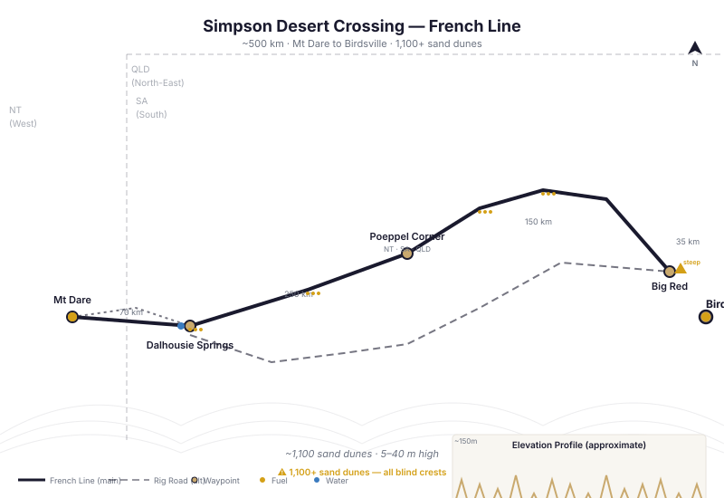

📑 Contents
Simpson Desert — Map & Track Reference

French Line crossing route — key waypoints, fuel stops, and distances (approx. 500 km east-west)The Simpson Desert is the largest parallel sand dune desert in the world, covering approximately 176,500 km² at the junction of the Northern Territory, South Australia, and Queensland borders. It contains over 1,140 dunes running north-south, many exceeding 20 metres in height.
The Simpson is a world-class 4WD challenge, not an extreme survival test — but it demands respect. Isolation, soft sand, extreme summer temperatures, and zero mobile reception mean preparation is non-negotiable.
Key Facts
| Attribute | Detail |
|---|---|
| Location | Junction of NT, SA, QLD |
| Area | ~176,500 km² |
| Number of dunes | ~1,140 |
| Dune height | 5–40 metres |
| Dune orientation | North-south (parallel) |
| Total crossing distance | 350–500 km (varies by line) |
| Typical crossing time | 3–5 days east-west |
| Best season | May–September |
| Summer maximum | 45°C+ |
| Winter maximum | 20–28°C |
| Winter minimum | 0–8°C |
| Mobile phone reception | Nil across entire desert |
| UHF effectiveness | Line-of-sight only (dunes block signal) |
Major Tracks (Crossing Lines)
French Line
- The most direct and popular crossing (~500 km from Dalhousie Springs to Birdsville)
- Crosses ~1,100 dunes over 500 km
- Starts at Dalhousie Springs (SA), ends at Birdsville (QLD)
- Fairly well defined — follows the original survey line with marker posts at intervals (not continuous — do not rely on them)
- Northern section (QLD side) through Munga-Thirri National Park
- Southern section through Simpson Desert Conservation Park (SA)
- Dune crossings: some steep approach/departure angles — select correct line, momentum is everything
Rig Road
- Southern alternative to the French Line
- Fewer dunes — approximately 600 dune crossings
- Longer overall distance but less technical
- Navigates via the Rig Road well site and Poeppel Corner (intersection of NT/SA/QLD borders)
- More popular with inexperienced drivers or under-prepared vehicles
- Connects Birdsville Track area with Poeppel Corner, then east to Birdsville
WAA Line
- Western approach from Mt Dare Station
- ~460 km from Mt Dare to Birdsville
- Named for the WAA well site where it meets the French Line
- Joins the French Line at approximately the halfway point
- Technically less challenging than the full French Line
- Common entry point from the NT side via Mt Dare or Old Andado
Hay River Track
- Northernmost crossing — remote, infrequently travelled
- Runs from the NT side near Hay River (south of Alice Springs area) to the Birdsville side
- Crosses into the northern section of the Simpson, missing the densest dune fields
- Approximately 400 km
- Many sections unmarked — GPS essential
- Considered the most remote of the four lines
Key Waypoints
| Waypoint | Coordinates (WGS84) | Notes |
|---|---|---|
| Dalhousie Springs | 26°24'00"S, 135°30'00"E | Start of French Line. Hot springs, treat water. No fuel. |
| Mt Dare | 26°04'00"S, 135°21'00"E | Last fuel before crossing (expensive, check availability). Campsite. |
| Purnie Bore | 26°25'00"S, 135°55'00"E | Artesian bore. Hot water. Can fill containers. |
| Poeppel Corner | 26°00'00"S, 138°00'00"E | NT/SA/QLD border junction. Monument. |
| Big Red | 25°24'00"S, 138°39'00"E | Easternmost dune, 40 m high. Iconic challenge dune. |
| Birdsville | 25°54'00"S, 139°21'00"E | End of crossing. Fuel (24 hr card bowser), pub, store. |
| Oodnadatta | 27°33'00"S, 135°27'00"E | Alternative southern fuel stop. |
| Erabena | 25°46'00"S, 138°00'00"E | Track junction south of Poeppel Corner. |
Fuel
| Location | Fuel Type | Notes |
|---|---|---|
| Dalhousie Springs | None | No fuel available. Fill up before leaving Mt Dare. |
| Mt Dare | Diesel, ULP | Expensive ($3+/L typical). Limited hours, call ahead. Last stop before crossing. |
| Birdsville | Diesel, ULP | 24-hour card-operated bowser. Reliable. |
| Oodnadatta | Diesel, ULP | 24-hour card bowser. |
| Marree | Diesel, ULP | Southern route alternative. |
Fuel range required: Minimum 800 km (safe range = 1,000 km). Carry a minimum of 60 L extra (jerry cans) beyond your main tank for a one-way crossing. If returning, double that.
Water
| Source | Location | Notes |
|---|---|---|
| Dalhousie Springs | 26°24'00"S, 135°30'00"E | Hot springs — thermal water, treat before drinking. |
| Purnie Bore | 26°25'00"S, 135°55'00"E | Artesian bore — hot (60°C+), let cool before treating. |
| Natural surface water | None | No reliable surface water in the Simpson. |
| Carry ALL drinking water | — | 5 L per person per day minimum. Allow 3–5 L for cooking. |
Golden rule: carry ALL your water. Do not rely on bores or springs. Treat any bore water before drinking (boil 3 min minimum or use filter/chemical treatment).
Permits
| Permit | Issuing Authority | Cost (2025) | Notes |
|---|---|---|---|
| SA Desert Parks Pass | SA Department for Environment | ~$200 annually | Required for Simpson Desert Conservation Park (SA side). Covers most SA parks. |
| Munga-Thirri Camping Permit | QLD Parks and Wildlife | ~$7/person/night | Required for QLD side (Munga-Thirri National Park). |
| Lake Eyre National Park Pass | SA Department for Environment | Included in Desert Parks Pass | If entering via the south. |
Where to buy: SA Desert Parks Pass online via SA Parks website or at Mt Dare Station. QLD permits via QLD Parks website.
Best Season
- Optimal: May through September
- Day temperatures 20–30°C
- Night temperatures 0–8°C
- Lower risk of heat exhaustion
-
Soft sand is manageable (not scorching hot)
-
Marginal: April and October
- Can reach 35–40°C by mid-afternoon
-
Start crossings early (pre-dawn) and stop by midday
-
Avoid: November through March
- Daytime temperatures routinely 45°C+
- Sand temperature exceeds 60°C — tyre pressure fluctuations, heat exhaustion risk
- Flash flooding possible (unlikely but possible)
- Do not travel the Simpson in midsummer
Hazards
| Hazard | Details | Mitigation |
|---|---|---|
| Soft sand | Deep sand throughout. Momentum critical. | Drop tyre pressures to 15–18 PSI on all-terrain tyres (12–15 PSI on mud terrains). Air up at Birdsville or Dalhousie. |
| Blind dune crests | Cannot see what's on the other side. | Honk horn before cresting. Approach at controlled speed. Watch for oncoming traffic. |
| Mulga stakes | Sharp branches hidden in sand can puncture sidewalls. | 10-ply tyres recommended. Carry tyre plug kit and two spares. |
| Isolation | 3–5 days between towns. No phone reception. | PLB mandatory. Sat phone recommended. File trip plan with SA Police or trusted contact. |
| Extreme heat (summer) | 45°C+, sand burns. | Do not travel summer. If stranded, stay with vehicle, create shade. |
| Flash flooding | Rare in the Simpson but possible after cyclonic rain. | Check BOM forecast before departure. Delay crossing if rain in forecast. |
| Dune rollovers | Incorrect angle or momentum on technical dunes. | Approach at 45° angle, straighten before summit, momentum but controlled. |
Communications
| Method | Effectiveness | Notes |
|---|---|---|
| UHF CB (Ch 40 default) | Poor — line-of-sight only | Dunes block signal. Useful within same convoy. |
| Satellite phone | Excellent | Iridium and Thuraya both work across the Simpson. |
| PLB (EPIRB) | Emergency only | Mandatory. Register with AMSA. |
| HF radio | Good (if equipped) | VKS-737 radio network has coverage. Expensive setup. |
| Mobile phone | None | Zero coverage across entire desert. |
PLB registration: Register your PLB/EPIRB with the Australian Maritime Safety Authority (AMSA) at www.amsa.gov.au. Ensure battery is within expiry date.
Trip notification: Lodge a trip intention form with SA Police (via their online form or at Marree/Oodnadatta police stations). Provide expected route, dates, and vehicle description.
Typical Crossing (French Line, 3–5 days)
| Day | From | To | Distance | Notes |
|---|---|---|---|---|
| 1 | Mt Dare | Purnie Bore | ~80 km | Enter Simpson, adjust tyre pressures |
| 2 | Purnie Bore | French Line midpoint | ~120 km | Main dune crossing day |
| 3 | Midpoint | QLD border / Poeppel Corner | ~110 km | QLD enters Munga-Thirri |
| 4 | QLD border | Birdsville | ~100 km | Big Red dune 15 km before Birdsville |
Times vary significantly with group size, vehicle capability, punctures, and weather.
Related Pages
- Outback 4WD Survival — General outback survival principles
- Route Planning — Fuel calculations, trip permits, emergency contacts
- Map Resources & Navigation Tools — Essential maps, digital resources
- What to Carry — Outback gear checklist
- Vehicle Breakdown — Stay or go decision framework
Vehicle Requirements
| Requirement | Minimum | Recommended |
|---|---|---|
| Tyres | LT (Light Truck) construction, all-terrain tread | Mud-terrain, 10-ply rating |
| Spare tyres | 2 (second spare mandatory for solo vehicle) | 2 + full puncture repair kit |
| Fuel range | 800 km minimum (loaded, soft sand consumption) | 1,000 km (carry 60–80L extra fuel) |
| Snorkel | Not required but strongly recommended (dust, not water) | Raised air intake for cleaner air |
| Suspension | Standard HD suspension adequate | 2\" lift improves dune approach angle |
| Recovery gear | Snatch strap, rated shackles, shovel, air compressor | Maxtrax recovery boards, exhaust jack |
| Water | 10L per person per day × 6 days | 10L × 8 days (contingency) |
| Communications | 5W UHF radio, PLB | Sat phone or inReach, HF radio |
| Trailer suitability | NOT recommended on French Line (tight dune turns, soft sand) | Small off-road camper trailer possible on Rig Road only |
| Vehicle type | Short wheelbase easier on dunes. Long wheelbase wagons need more momentum. | Toyota LandCruiser 70/200 series, Nissan Patrol GU/Y62, properly modified dual-cab utes. |
Campsite Guide
West-to-East (French Line — 4 nights recommended)
| Night | Campsite | GPS | Facilities | Notes |
|---|---|---|---|---|
| 0 | Mt Dare Hotel | -26.0733, 135.2445 | Fuel, meals, accommodation, showers, camping ($) | Last hot shower. Fill everything. |
| 1 | Purni Bore | -26.2800, 136.1000 | Bore water (treat), basic camping, toilet | ~120 km from Mt Dare. Artesian bore water available. Popular first-night camp. |
| 2 | Dune ~500 area | -26.1000, 137.0000 | No facilities. Bush camp between dunes. | ~150 km from Purni Bore. Pick a flat area between dunes, sheltered from wind. |
| 3 | Poeppel Corner | -25.9960, 137.9992 | Survey marker, camping area, toilet | ~100 km from mid-desert. Iconic three-state junction. Camp on SA side. |
| 4 | Big Red / Birdsville | -25.8531, 139.9185 | No facilities at Big Red. Birdsville has caravan park, pub, showers. | ~185 km from Poeppel. Arrive Birdsville by afternoon. Celebration at Birdsville Pub. |
Camping notes: - All bush camping outside designated sites — leave no trace - NO fires on Total Fire Ban days (check before lighting) - Wood is scarce in the desert — carry your own if you want a fire - Summer (Oct–Mar): extreme heat — camp near the vehicle for shade - Winter (Jun–Aug): nights can drop below 0°C — carry warm sleeping gear - Dingoes and camels may visit camp — store food in sealed containers in vehicle - Dalhousie Springs is an alternative first night (adds ~50km to first day)
GPS Waypoints
All coordinates WGS84 datum (GDA94 compatible). Suitable for direct entry into GPS, Hema Explorer, or OsmAnd.
Major Waypoints
| Location | Latitude | Longitude | Notes |
|---|---|---|---|
| Mt Dare Hotel | -26.0733 | 135.2445 | Western start, fuel, accommodation, meals |
| Dalhousie Springs | -26.4373 | 135.4975 | Natural hot springs, camping, water (treat before drinking) |
| Purni Bore | -26.2800 | 136.1000 | Artesian bore water, campsite |
| Poeppel Corner | -25.9960 | 137.9992 | NT/SA/QLD border junction, survey marker |
| Big Red (easternmost dune) | -25.8531 | 139.9185 | Iconic dune, ~35km west of Birdsville |
| Birdsville | -25.8990 | 139.3510 | Eastern terminus, fuel (24hr card), pub, supplies |
Fuel Stops
| Location | Latitude | Longitude | Type |
|---|---|---|---|
| Mt Dare (limited, expensive) | -26.0733 | 135.2445 | Diesel, ULP — check availability before trip |
| Birdsville (24hr card bowser) | -25.8990 | 139.3510 | Diesel, ULP — card only after hours |
| Oodnadatta (southern approach) | -27.5500 | 135.4470 | Diesel, ULP — Pink Roadhouse |
Water Points
| Location | Latitude | Longitude | Source |
|---|---|---|---|
| Dalhousie Springs | -26.4373 | 135.4975 | Hot springs — boil/treat before drinking |
| Purni Bore | -26.2800 | 136.1000 | Artesian bore — generally potable |
| Mokari Bore | -26.2000 | 136.5500 | Artesian bore overflow |
Track Junction Waypoints
| Location | Latitude | Longitude | Junction |
|---|---|---|---|
| French Line / WAA Line junction | -26.3000 | 135.8000 | West of Poeppel Corner |
| French Line / Rig Road south junction | -25.9000 | 138.9000 | East of Poeppel Corner |
| Rig Road south / K1 Line junction | -26.2000 | 137.5000 | Southern loop access |
Key Dunes (French Line)
| Dune (approx number from west) | Latitude | Longitude | Notes |
|---|---|---|---|
| Dune ~100 | -26.4000 | 136.2000 | Early dunes, shallow |
| Dune ~500 | -26.1000 | 137.0000 | Mid-desert, steeper |
| Dune ~900 | -25.9500 | 138.5000 | Approaching Poeppel, long runs |
| Dune ~1100 (Big Red) | -25.8531 | 139.9185 | Last dune, 35km west of Birdsville |
Free Topographic Map Downloads
Geoscience Australia provides free 1:250,000 scale topographic maps of the entire continent under a CC BY 4.0 licence. These are the same maps used by emergency services, park rangers, and experienced outback travellers.
How to Download
Step 1: Go to the Geoscience Australia Product Catalogue
Step 2: Search for the map sheet code (e.g., "SG53-11") in the search box
Step 3: Click the result, then click Download (PDF, 3–8MB per sheet)
Relevant 1:250K Map Sheets
| Map Sheet | Code | Coverage |
|---|---|---|
| Dalhousie | SG53-11 | Western approach, Dalhousie Springs, Mt Dare |
| Birdsville | SG54-05 | Eastern terminus, Birdsville, Big Red dune |
| Poeppel Corner | SG54-02 | NT/SA/QLD junction, eastern French Line |
| Sandringham | SG54-01 | Central Simpson, Rig Road |
| Oodnadatta | SG53-15 | Southern approach, Oodnadatta Track |
Offline Mapping Apps (No Internet Needed)
For smartphone/tablet navigation without mobile reception:
- OsmAnd — Free offline maps using OpenStreetMap data. Download state maps before your trip. Works entirely offline with GPS.
- Avenza Maps — Free app. Load GeoPDF topo maps from Geoscience Australia (downloaded via the catalogue above). GPS works offline.
- ExplorOz Traveller — Australia-specific 4WD navigation. Paid app but designed for outback use. Offline maps included.
Paper Maps (Essential Backup)
Always carry paper maps. Electronics fail in heat, dust, and corrugations.
| Map | Publisher | Coverage |
|---|---|---|
| Hema Desert Series — Simpson Desert | Hema Maps | 1:250K — Detailed track map with fuel stops, campsites, POIs |
| Westprint Simpson Desert | Westprint Maps | 1:1M — Overview map with historical notes and track conditions |
Key Notes
- All GA maps use GDA94/WGS84 datum — fully compatible with GPS
- Print at 100% scale (A1 or A0 paper) for readable detail
- Carry hard copies — they do not require batteries or signal
- GA maps are CC BY 4.0 — free to download, use, share, and print commercially